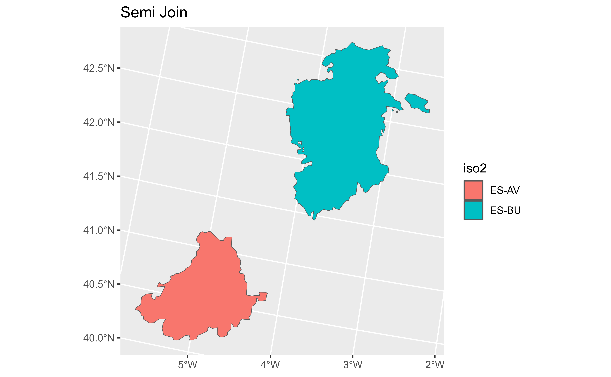
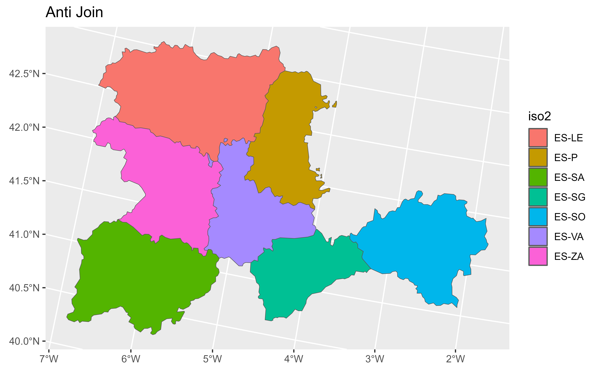

Filtering joins filter rows from x based on the presence or absence of
matches in y:
semi_join()return all rows fromxwith a match iny.anti_join()return all rows fromxwithout a match iny.
See dplyr::semi_join() for details.
Arguments
- x
A SpatVector created with
terra::vect().- y
A data frame or other object coercible to a data frame. If a SpatVector of sf object is provided it would return an error (see
terra::intersect()for performing spatial joins).- by
A join specification created with
join_by(), or a character vector of variables to join by.If
NULL, the default,*_join()will perform a natural join, using all variables in common acrossxandy. A message lists the variables so that you can check they're correct; suppress the message by supplyingbyexplicitly.To join on different variables between
xandy, use ajoin_by()specification. For example,join_by(a == b)will matchx$atoy$b.To join by multiple variables, use a
join_by()specification with multiple expressions. For example,join_by(a == b, c == d)will matchx$atoy$bandx$ctoy$d. If the column names are the same betweenxandy, you can shorten this by listing only the variable names, likejoin_by(a, c).join_by()can also be used to perform inequality, rolling, and overlap joins. See the documentation at ?join_by for details on these types of joins.For simple equality joins, you can alternatively specify a character vector of variable names to join by. For example,
by = c("a", "b")joinsx$atoy$aandx$btoy$b. If variable names differ betweenxandy, use a named character vector likeby = c("x_a" = "y_a", "x_b" = "y_b").To perform a cross-join, generating all combinations of
xandy, seecross_join().- copy
If
xandyare not from the same data source, andcopyisTRUE, thenywill be copied into the same src asx. This allows you to join tables across srcs, but it is a potentially expensive operation so you must opt into it.- ...
Other parameters passed onto methods.
Methods
Implementation of the generic dplyr::semi_join() family
See also
dplyr::semi_join(), dplyr::anti_join(), terra::merge()
Other dplyr verbs that operate on pairs Spat*/data.frame:
bind_cols.SpatVector,
bind_rows.SpatVector,
mutate-joins.SpatVector
Other dplyr methods:
arrange.SpatVector(),
bind_cols.SpatVector,
bind_rows.SpatVector,
count.SpatVector(),
distinct.SpatVector(),
filter.Spat,
glimpse.Spat,
group-by.SpatVector,
mutate-joins.SpatVector,
mutate.Spat,
pull.Spat,
relocate.Spat,
rename.Spat,
rowwise.SpatVector(),
select.Spat,
slice.Spat,
summarise.SpatVector()
Examples
library(terra)
library(ggplot2)
# Vector
v <- terra::vect(system.file("extdata/cyl.gpkg", package = "tidyterra"))
# A data frame
df <- data.frame(
cpro = sprintf("%02d", 1:10),
x = runif(10),
y = runif(10),
letter = rep_len(LETTERS[1:3], length.out = 10)
)
v
#> class : SpatVector
#> geometry : polygons
#> dimensions : 9, 3 (geometries, attributes)
#> extent : 2892687, 3341372, 2017622, 2361600 (xmin, xmax, ymin, ymax)
#> source : cyl.gpkg
#> coord. ref. : ETRS89-extended / LAEA Europe (EPSG:3035)
#> names : iso2 cpro name
#> type : <chr> <chr> <chr>
#> values : ES-AV 05 Avila
#> ES-BU 09 Burgos
#> ES-LE 24 Leon
# Semi join
semi <- v %>% semi_join(df)
#> Joining with `by = join_by(cpro)`
semi
#> class : SpatVector
#> geometry : polygons
#> dimensions : 2, 3 (geometries, attributes)
#> extent : 2987054, 3296229, 2017622, 2331004 (xmin, xmax, ymin, ymax)
#> coord. ref. : ETRS89-extended / LAEA Europe (EPSG:3035)
#> names : iso2 cpro name
#> type : <chr> <chr> <chr>
#> values : ES-AV 05 Avila
#> ES-BU 09 Burgos
autoplot(semi, aes(fill = iso2)) + ggtitle("Semi Join")

# Anti join
anti <- v %>% anti_join(df)
#> Joining with `by = join_by(cpro)`
anti
#> class : SpatVector
#> geometry : polygons
#> dimensions : 7, 3 (geometries, attributes)
#> extent : 2892687, 3341372, 2049224, 2361600 (xmin, xmax, ymin, ymax)
#> coord. ref. : ETRS89-extended / LAEA Europe (EPSG:3035)
#> names : iso2 cpro name
#> type : <chr> <chr> <chr>
#> values : ES-LE 24 Leon
#> ES-P 34 Palencia
#> ES-SA 37 Salamanca
autoplot(anti, aes(fill = iso2)) + ggtitle("Anti Join")
